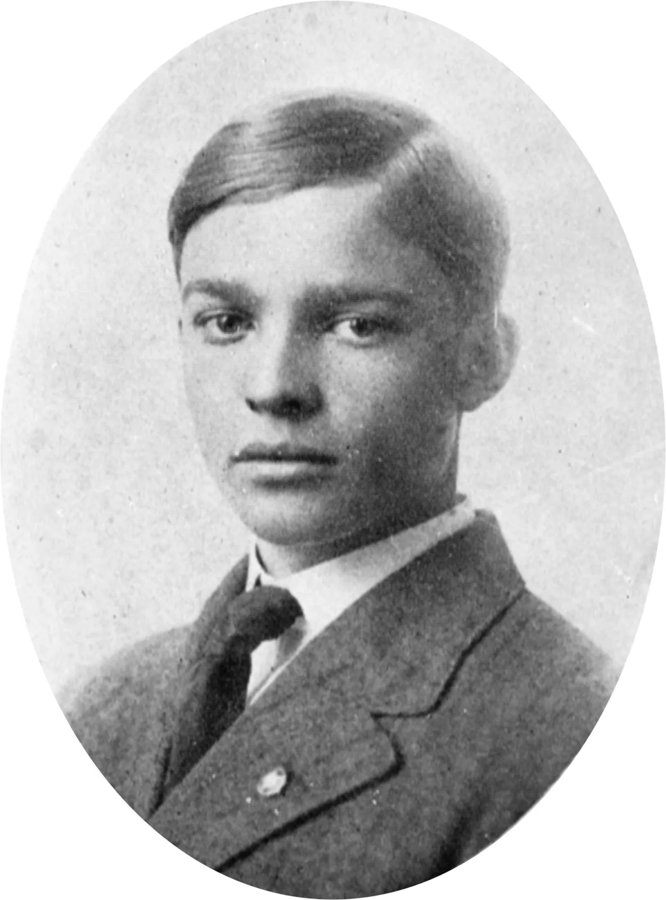
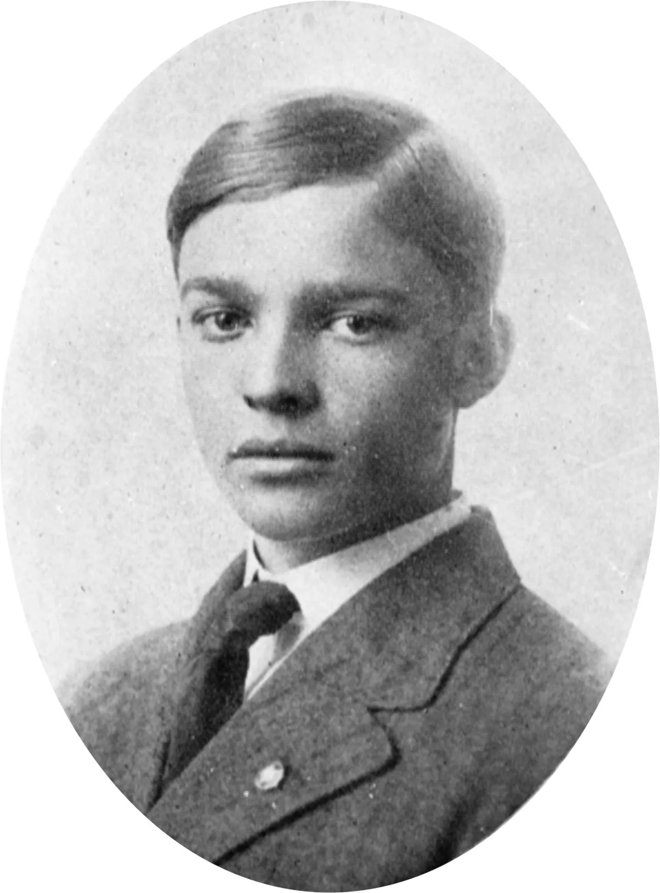

Early Life
Dwight D. Eisenhower was born on October 14, 1890, in Denison, Texas, but grew up in Abilene, Kansas. He was the third of seven sons in a hardworking but financially struggling family. His upbringing emphasized discipline, education, and perseverance, shaping his strong work ethic.
Eisenhower excelled in academics and sports, earning a nomination to the U.S. Military Academy at West Point, where he graduated in 1915. Although he wanted to fight in World War I, he was instead assigned to train tank crews in the U.S., showcasing his leadership skills early on.
Despite missing combat in World War I, Eisenhower’s strategic abilities gained recognition. He held various military roles, including working under General Douglas MacArthur in the Philippines, which helped pave the way for his leadership in World War II.
 
